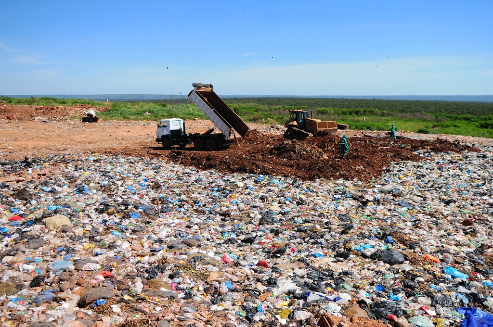
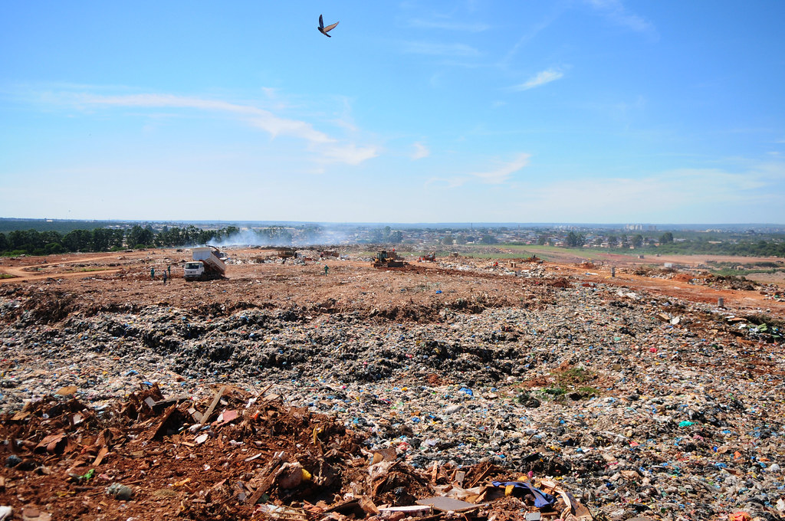
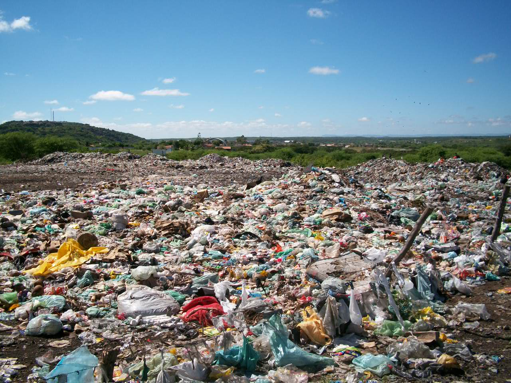
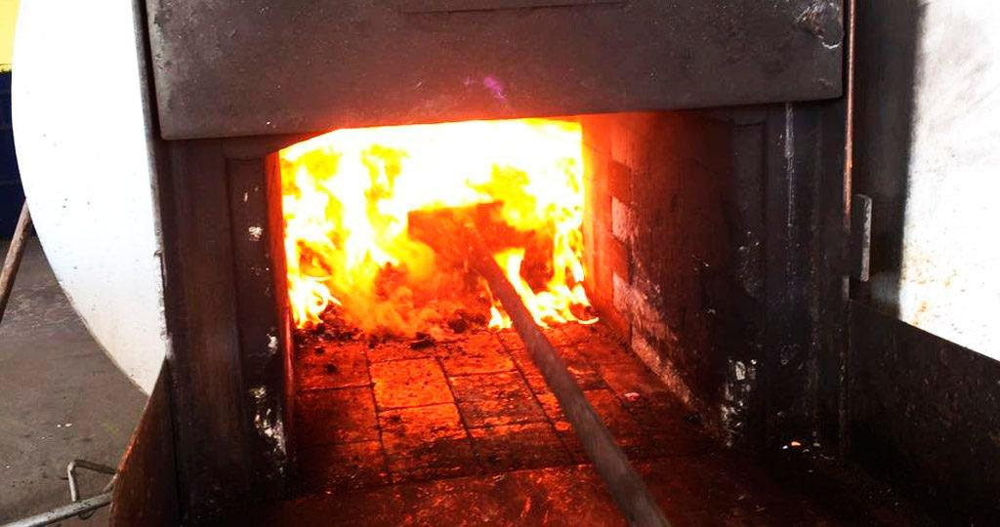
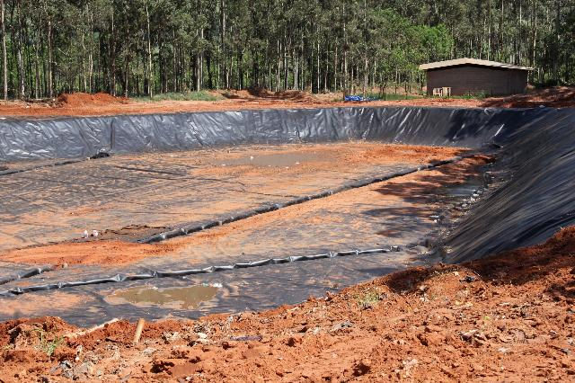

O que você está fazendo pelo nosso planeta?
Reciclar é fazer a nossa parte para um mundo mais sustentavel. ♻️
Reciclar é mais que dar um novo destino para seu lixo, é poupar água energia e contribuir com o meio ambiente. ♻️
Conceito de Lixo - resíduos sólidos
Popularmente conhecido como “lixo” resíduos sólidos são todo tipo de objeto que foi descartado e se encontra no estado sólido, que não apresentam nenhuma utilidade para quem o descartou, mas pode ser útil para outras pessoas seja reutilizando ou reciclando quando um resíduo se encontra na condição que não é mais possivel reutilizar ou reciclar é dado o nome de rejeito.
Tipos de Resíduos
Resíduos sólidos urbano, domiciliares, orgânicos e inorgânicos, especiais, comercial, industrial, hospitalar, construção civil, nuclear, agro e transportes. Cada um com sua forma correta de ser descartada.
Locais de descarte dos resíduos sólidos
Lixões
Considerado a forma mais inadequada de se descartar o lixo, pois o lixo é descartado a céu aberto, sem nenhuma medida de proteção ao meio ambiente e à saúde pública nem controle dos tipos de lixos que são depositados o que contamina o solo e os lençóis freáticos.
  Coprocessamento
Utiliza resíduos industriais/urbanos com o intuito de gerar energia e recuperar recursos e diminuir o uso de combustiveis fósseis.
Incineradores
Reduz o lixo a cinzas, é utilizado quando está em uma condição de que não existem tratamentos para esse resíduo, é muito utilizado na Europa e Japão reaproveitando do calor para gerar energia elétrica, porem gera muitos gases do efeito estufa.
Aterros sanitários.
Considerados a melhor forma de se descartar o lixo, pode ser descartado qualquer tipo de resíduo, possui mantas imperemeabilizantes que impedem a infiltração do chorume no solo e um controle dos tipos de resíduos.
Brasil é o 4° maior produtor de lixo no mundo produzindo em média 379,2 kg de lixo por ano e 1 kg de lixo por dia.
60% do lixo possui destinação adequada e 40% vai para destinos inadequados.